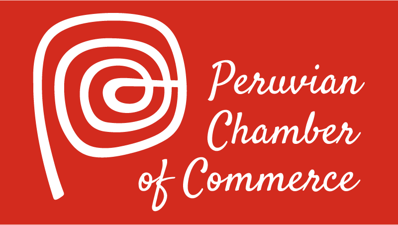

Purpose
Providing information about the local business community, promoting local events, offering business resources, and supporting tourism.
Logo

Providing information about the local business community, promoting local events, offering business resources, and supporting tourism.